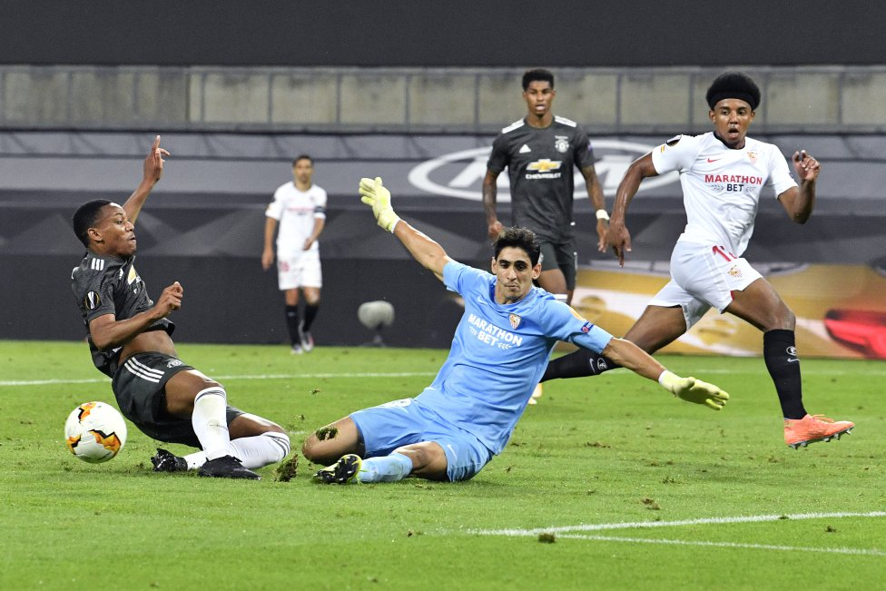

El ajedres es un deporte que ayuda a agilizar la mente, y ayuda en la creacion de estratejias.

Es un desporte de alta demanda encuanto a trabajo en equipo para ganar puntos y sobre todo divertirse.
Exige agilidad para tener una rapida respuesta y potencia para poder golpear la pelota.

El fultbol es bueno para la salud ya que mejora la condicion fisica cardio vascular, fortalece los musculos, mejora la coordinacion, aumenta la flexibilidad, entre sus beneficios.

La natación es una actividad física aeróbica que ofrece una amplia gama de beneficios para la salud de personas de todas las edades y capacidades físicas.
Entre sus beneficion para la salud esta el beneficio a mejorar el sueño, alivia el estres, es buena para el artritis, etc.